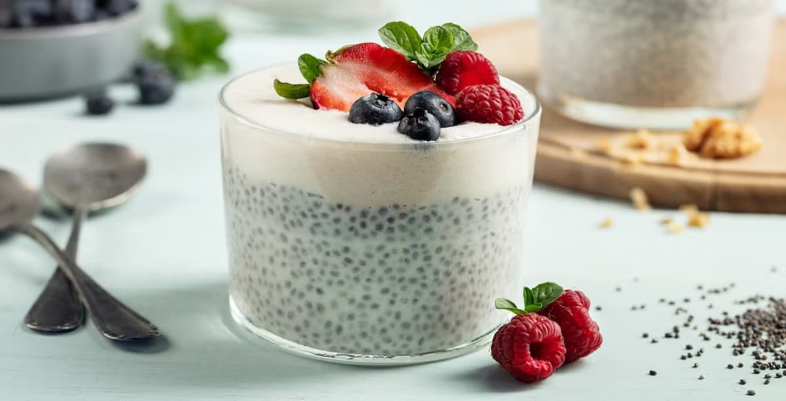
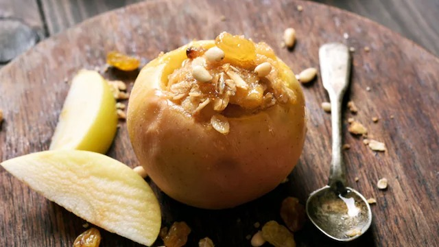

Postres
Pudín de chía con frutas
Ingredientes:
1. 3 cucharadas de semillas de chía.
2. 1 taza de leche de almendras (o la de tu preferencia).
3. 1 cucharadita de miel o edulcorante natural.
4. 1/2 cucharadita de extracto de vainilla.
5. Frutas frescas (como fresas, kiwi o plátano) para decorar.
Preparación:
1. Mezcla las semillas de chía con la leche, la miel y la vainilla en un recipiente.
2. Deja reposar la mezcla en el refrigerador durante al menos 4 horas o toda la noche para que las semillas absorban el líquido y se forme el pudín.
3. Sirve el pudín con las frutas frescas por encima.
Mousse de aguacate y cacao
Ingredientes:
1. 1 aguacate maduro.
2. 2 cucharadas de cacao en polvo sin azúcar.
3. 2 cucharadas de miel o jarabe de agave.
4. 1/2 cucharadita de extracto de vainilla.
5. Pizca de sal.
Preparación:
1. Pela y pica el aguacate, luego colócalo en un procesador de alimentos o licuadora.
2. Añade el cacao, la miel, la vainilla y la pizca de sal.
3. Mezcla todo hasta obtener una consistencia suave y cremosa.
4. Sirve en pequeños recipientes y refrigera durante 1-2 horas antes de disfrutar.
Manzanas asadas con canela y nueces
Ingredientes:
1. 2 manzanas.
2. 1 cucharadita de canela en polvo.
3. 1 cucharada de nueces picadas.
4. 1 cucharada de miel (opcional).
Preparación:
1. Precalienta el horno a 180°C.
2. Lava y corta las manzanas en mitades o cuartos, retirando el corazón.
3. Coloca las manzanas en una bandeja para hornear, espolvorea con canela y un chorrito de miel (si lo deseas).
4. Hornea durante 20-25 minutos, hasta que las manzanas estén tiernas.
5. Sírvelas con nueces picadas por encima.